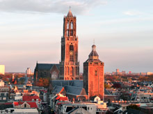
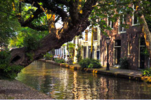

Utrecht
 Utrecht es la capital de la provincia homónima o Provincia de Utrecht. Se ubica en el centro de los Países Bajos, siendo la cuarta ciudad en importancia de este reino. Es uno de los ejemplos más destacados de la morfología de una urbe histórica y monumental en los Países Bajos. Asimismo, es uno de los principales centros económicos e industriales del país.
Utrecht es la capital de la provincia homónima o Provincia de Utrecht. Se ubica en el centro de los Países Bajos, siendo la cuarta ciudad en importancia de este reino. Es uno de los ejemplos más destacados de la morfología de una urbe histórica y monumental en los Países Bajos. Asimismo, es uno de los principales centros económicos e industriales del país.
Utrecht es una ciudad alegre y relajada con un gran pasado histórico, en la actualidad es un importante centro religioso, intelectual y comercial, por esto es considerado el segundo destino turístico más demandado de los Países Bajos, después de Ámsterdam, debido fundamentalmente a la belleza y disposición de la urbe y la intensa actividad cultural y de ocio que presenta.
  Utrecht es conocida por la Torre de la Catedral de Utrecht y los canales en el centro de la ciudad, los cuales estan rodeados de parques con caminos frondosos, el casco antiguo de Utrecht se ha convertido en una zona que sobresale por su tranquilidad, belleza plástica y su vertiente acogedora. Aunque los tenderos se quejan de la supuesta falta de accesibilidad del tráfico motorizado y del aparcamiento caro, el casco antiguo atrae a miles de personas con ganas de hacer compras, relajarse y disfrutar de la oferta cultural.